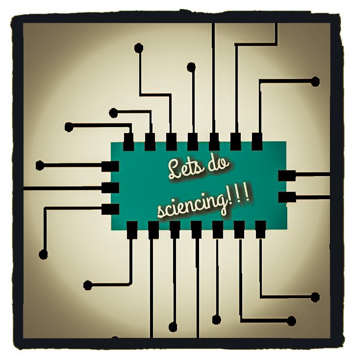
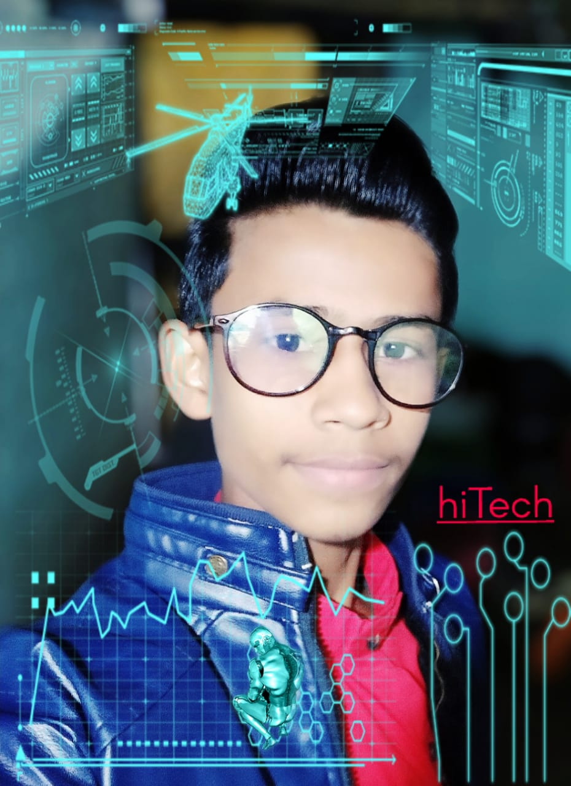

|  | LETS DO SCIENCING !!! |
Science is interesting because it makes us able to look into the details of what we and the world around us are made of, how things works, and how we can play with it whether to make an air-conditioner system, a motorbike, or send people in space. Scientists often make experiments to find out more about reality, and sometimes may repeat experiments or use control groups. Scientists who are doing applied science try to use scientific knowledge to improve the world. Nowadays, many young scientist are coming up with amazing kind of ideas and I am one such child who converted struggles of life into golden opportunities and kept on moving to acheive the goals of my life.
|
Hi, my name is Shiva Patel. I love making science models and doing experiment. My passion is split between my love for sciencing and dream to set a start-up which will develope and innovate one of the best electronic devices at one of the cheapest price. My dream start-up will also be providing help and resources to underprivileged, willing and deserving students across the globe. I have been honoured with the title-'Young Scientist of Kanpur'. Also, recently I participated in Techkriti-(2019-20) and the model which I displayed i.e. USB Laser Pointer and Wireless Tester, specially honoured and company from Noida,Stem Robo Company bought my idea at a nominal price and announced to launch the final product based on my idea(model). Thats a quite big acheivement for me, a young and innovative student who lacks many luxuries of life but having a power of knowledge which can lead me to a greater height and dreams that I am having. |
Shiva Patel |
I am brilliant and studious pupil from my childhood and by my efforts and hardwork, I managed to score 87% in my highschool exams from a well known and reknowned school of Kanpur i.e. Jai Narayan Vidya Mandir Inter College, Vikas Nagar, Kanpur. I took science stream with maths in class 11th and preparing for my competitive exams as well. I am also an active volunteer of ATL(Atal Tinkering Lab) initiated by NITI Aayog, Govt. of India under the supervision of Mr. Kaustub Omar, Lab Incharge and Convener(ISSTF). I have participated in many intra, inter-school, District Level and even National Level Competition in field of Science and Mechanics. I also have cerficates in different other fields like painting and olympiads, etc.
Beside being a volunteer at ATL, I am also a trainer and take part in training willing students at various summer camps and motivate and help them to understand science as fun and a practical subject by teaching them to how to make different kind of working Science models.
The reason behind my motivation is my parent's blessing, my sister's helping hand and my teacher's trust on me. Their smiling faces always keeps me motivated and dedicated towards my work and help me a lot to step forward to acheive my goals.